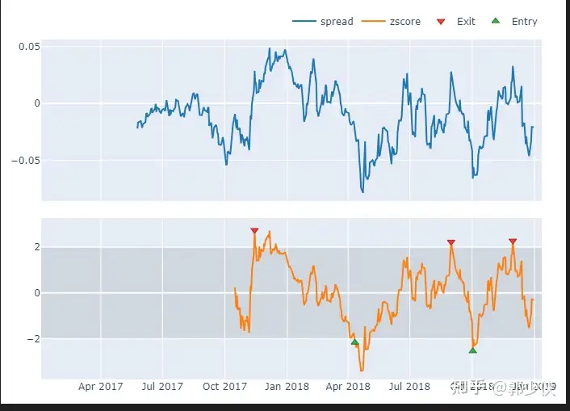
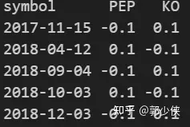
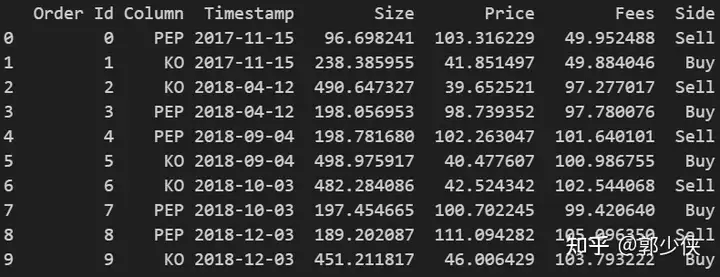
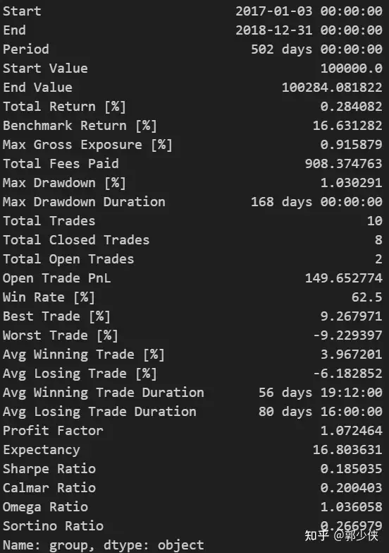

vectorbt-案例學習（4）-配對（套利）交易
Portfolio.from_orders構造方法
一、獲取資料
import numpy as np
import pandas as pd
import datetime
import collections
import math
import pytz
import scipy.stats as st
SYMBOL1 = 'PEP'
SYMBOL2 = 'KO'
FROMDATE = datetime.datetime(2017, 1, 1, tzinfo=pytz.utc)
TODATE = datetime.datetime(2019, 1, 1, tzinfo=pytz.utc)
PERIOD = 100
CASH = 100000
COMMPERC = 0.005 # 0.5%
ORDER_PCT1 = 0.1
ORDER_PCT2 = 0.1
UPPER = st.norm.ppf(1 - 0.05 / 2)
LOWER = -st.norm.ppf(1 - 0.05 / 2)
MODE = 'OLS' # OLS, log_return
import vectorbt as vbt
start_date = FROMDATE.replace(tzinfo=pytz.utc)
end_date = TODATE.replace(tzinfo=pytz.utc)
data = vbt.YFData.download([SYMBOL1, SYMBOL2], start=start_date, end=end_date)
data = data.loc[(data.wrapper.index >= start_date) & (data.wrapper.index < end_date)]
二、根據訂單建立投資組合
from numba import njit
# njit為裝飾器，加速運算
@njit
def rolling_logret_zscore_nb(a, b, period):
"""計算a，b（交易對）對數收益率的差值.並進行zscroe標準化"""
spread = np.full_like(a, np.nan, dtype=np.float_)
spread[1:] = np.log(a[1:] / a[:-1]) - np.log(b[1:] / b[:-1])
zscore = np.full_like(a, np.nan, dtype=np.float_)
for i in range(a.shape[0]):
from_i = max(0, i + 1 - period)
to_i = i + 1
if i < period - 1:
continue
spread_mean = np.mean(spread[from_i:to_i])
spread_std = np.std(spread[from_i:to_i])
zscore[i] = (spread[i] - spread_mean) / spread_std
return spread, zscore
@njit
def ols_spread_nb(a, b):
"""最小二乘法計算a，b的回歸殘差（觀測值與OLS回歸線的垂直距離）"""
a = np.log(a)
b = np.log(b)
_b = np.vstack((b, np.ones(len(b)))).T
slope, intercept = np.dot(np.linalg.inv(np.dot(_b.T, _b)), np.dot(_b.T, a))
spread = a - (slope * b + intercept)
return spread[-1]
@njit
def rolling_ols_zscore_nb(a, b, period):
"""對回歸殘差的滾動標準化."""
spread = np.full_like(a, np.nan, dtype=np.float_)
zscore = np.full_like(a, np.nan, dtype=np.float_)
for i in range(a.shape[0]):
from_i = max(0, i + 1 - period)
to_i = i + 1
if i < period - 1:
continue
spread[i] = ols_spread_nb(a[from_i:to_i], b[from_i:to_i])
spread_mean = np.mean(spread[from_i:to_i])
spread_std = np.std(spread[from_i:to_i])
zscore[i] = (spread[i] - spread_mean) / spread_std
return spread, zscore
# 滾動OLS回歸分析
if MODE == 'OLS':
vbt_spread, vbt_zscore = rolling_ols_zscore_nb(
bt_s1_ohlcv['close'].values,
bt_s2_ohlcv['close'].values,
PERIOD
)
#對數收益率差值分析
elif MODE == 'log_return':
vbt_spread, vbt_zscore = rolling_logret_zscore_nb(
bt_s1_ohlcv['close'].values,
bt_s2_ohlcv['close'].values,
PERIOD
)
else:
raise ValueError("Unknown mode")
vbt_spread = pd.Series(vbt_spread, index=bt_s1_ohlcv.index, name='spread')
vbt_zscore = pd.Series(vbt_zscore, index=bt_s1_ohlcv.index, name='zscore')
# 生成入場多空訊號
vbt_short_signals = (vbt_zscore > UPPER).rename('short_signals')
vbt_long_signals = (vbt_zscore < LOWER).rename('long_signals')
vbt_short_signals, vbt_long_signals = pd.Series.vbt.signals.clean(
vbt_short_signals, vbt_long_signals, entry_first=False, broadcast_kwargs=dict(columns_from='keep'))
def plot_spread_and_zscore(spread, zscore):
fig = vbt.make_subplots(rows=2, cols=1, shared_xaxes=True, vertical_spacing=0.05)
spread.vbt.plot(add_trace_kwargs=dict(row=1, col=1), fig=fig)
zscore.vbt.plot(add_trace_kwargs=dict(row=2, col=1), fig=fig)
vbt_short_signals.vbt.signals.plot_as_exit_markers(zscore, add_trace_kwargs=dict(row=2, col=1), fig=fig)
vbt_long_signals.vbt.signals.plot_as_entry_markers(zscore, add_trace_kwargs=dict(row=2, col=1), fig=fig)
fig.update_layout(height=500)
fig.add_shape(
type="rect",
xref='paper',
yref='y2',
x0=0,
y0=UPPER,
x1=1,
y1=LOWER,
fillcolor="gray",
opacity=0.2,
layer="below",
line_width=0,
)
return fig
plot_spread_and_zscore(vbt_spread, vbt_zscore).show_svg()

三、根據交易訊號建構訂單
# 根據交易訊號建立訂單
symbol_cols = pd.Index([SYMBOL1, SYMBOL2], name='symbol')
vbt_order_size = pd.DataFrame(index=bt_s1_ohlcv.index, columns=symbol_cols)
vbt_order_size[SYMBOL1] = np.nan
vbt_order_size[SYMBOL2] = np.nan
vbt_order_size.loc[vbt_short_signals, SYMBOL1] = -ORDER_PCT1
vbt_order_size.loc[vbt_long_signals, SYMBOL1] = ORDER_PCT1
vbt_order_size.loc[vbt_short_signals, SYMBOL2] = ORDER_PCT2
vbt_order_size.loc[vbt_long_signals, SYMBOL2] = -ORDER_PCT2
# 下一個bar執行訂單
vbt_order_size = vbt_order_size.vbt.fshift(1)
print(vbt_order_size[~vbt_order_size.isnull().any(axis=1)])

四、進行回測
# 模擬投資組合
vbt_close_price = pd.concat((bt_s1_ohlcv['close'], bt_s2_ohlcv['close']), axis=1, keys=symbol_cols)
vbt_open_price = pd.concat((bt_s1_ohlcv['open'], bt_s2_ohlcv['open']), axis=1, keys=symbol_cols)
def simulate_from_orders():
"""用之前建構的訂單進行回測`."""
return vbt.Portfolio.from_orders(
vbt_close_price, # current close as reference price
size=vbt_order_size,
price=vbt_open_price, # current open as execution price
size_type='targetpercent',
val_price=vbt_close_price.vbt.fshift(1), # previous close as group valuation price
init_cash=CASH,
fees=COMMPERC,
cash_sharing=True, # share capital between assets in the same group
group_by=True, # all columns belong to the same group
call_seq='auto', # sell before buying
freq='d' # index frequency for annualization
)
vbt_pf = simulate_from_orders()
print(vbt_pf.orders.records_readable)
print(vbt_pf.stats())

交易明細

績效統計
五、繪圖
from functools import partial
def plot_orders(portfolio, column=None, add_trace_kwargs=None, fig=None):
portfolio.orders.plot(column=column, add_trace_kwargs=add_trace_kwargs, fig=fig)
vbt_pf.plot(subplots=[
('symbol1_orders', dict(
title=f"Orders ({SYMBOL1})",
yaxis_title="Price",
check_is_not_grouped=False,
plot_func=partial(plot_orders, column=SYMBOL1),
pass_column=False
)),
('symbol2_orders', dict(
title=f"Orders ({SYMBOL2})",
yaxis_title="Price",
check_is_not_grouped=False,
plot_func=partial(plot_orders, column=SYMBOL2),
pass_column=False
))
]).show_svg()

運行速度：3.72 ms ± 15.9 µs per loop (mean ± std. dev. of 7 runs, 100 loops each)
以上案例為：Portfolio.from_orders構造方法。它非常方便和最佳化的函數用於模擬投資組合，但它需要一些先前的步驟來生成大小陣列。在上面的例子中，需要手動運行散點 Z score的計算，從Z score生成訊號，從訊號建構大小陣列，並確保所有陣列完全對齊。一旦需要測試超過一個超參陣列合，所有這些步驟都必須重複並相應進行調整。
Portfolio.from_order_func構造方法
以下案例為：Portfolio.from_order_func構造方法。 遵循一種不同的（自包含的）方法，其中儘可能多的步驟應該在模擬函數本身中定義。它按順序逐一處理時間戳，並根據使用者定義的邏輯執行訂單，而不是從某些陣列中解析這個邏輯。儘管這使得訂單執行不太透明，因為您不能再即時地分析每一部分資料（Numba 中不能使用 pandas 和繪圖），但它與其他向量化方法相比具有一個重大優勢：事件驅動的訂單處理。這提供了最大的靈活性（可以撰寫任何邏輯）、安全性（降低了暴露自己於前瞻性偏見等其他偏見的可能性）和性能（資料只需要遍歷一次）。這種方法與 backtrader 最為相似
一、主程序
from vectorbt.portfolio import nb as portfolio_nb
from vectorbt.base.reshape_fns import flex_select_auto_nb
from vectorbt.portfolio.enums import SizeType, Direction
from collections import namedtuple
Memory = namedtuple("Memory", ('spread', 'zscore', 'status'))
Params = namedtuple("Params", ('period', 'upper', 'lower', 'order_pct1', 'order_pct2'))
@njit
#該函數為每個組（一對列）準備資料。它初始化陣列以儲存價差、z 分數和狀態。它選擇當前組的參數
#並將它們儲存在一個容器中。
def pre_group_func_nb(c, _period, _upper, _lower, _order_pct1, _order_pct2):
"""Prepare the current group (= pair of columns)."""
assert c.group_len == 2
# 與bt相比，vbt不建立實例，而是儲存在陣列裡
# 建立spread和zscore陣列：這些陣列用於儲存價差和z分數。它們被初始化為NaN，長度為c.target_shape[0]，
#即資料的長度。
spread = np.full(c.target_shape[0], np.nan, dtype=np.float_)
zscore = np.full(c.target_shape[0], np.nan, dtype=np.float_)
# status陣列：這個陣列用於儲存狀態資訊，初始化為0。
# 將spread、zscore和status陣列組合成一個命名元組，作為儲存資料的容器。
status = np.full(1, 0, dtype=np.int_)
memory = Memory(spread, zscore, status)
# 將傳入的參數_period、_upper、_lower、_order_pct1、_order_pct2轉換成陣列，並根據組的索引選擇對應的值。
#這樣可以確保每個組可以有不同的參數組態。
period = flex_select_auto_nb(np.asarray(_period), 0, c.group, True)
upper = flex_select_auto_nb(np.asarray(_upper), 0, c.group, True)
lower = flex_select_auto_nb(np.asarray(_lower), 0, c.group, True)
order_pct1 = flex_select_auto_nb(np.asarray(_order_pct1), 0, c.group, True)
order_pct2 = flex_select_auto_nb(np.asarray(_order_pct2), 0, c.group, True)
# 把所有參數放入容器
params = Params(period, upper, lower, order_pct1, order_pct2)
# 儲存 pre_segment_func_nb 函數中要用到的兩個目標百分比。這個陣列的長度為當前組的長度
size = np.empty(c.group_len, dtype=np.float_)
return (memory, params, size)
@njit
def pre_segment_func_nb(c, memory, params, size, mode):
"""預處理分段資料"""
# 檢查是否達到指定窗口大小
if c.i < params.period - 1:
size[0] = np.nan # size of nan means no order
size[1] = np.nan
return (size,)
#窗口切片：用於計算zscore
window_slice = slice(max(0, c.i + 1 - params.period), c.i + 1)
# 根據不同模式計算價差spread
if mode == 'OLS':
a = c.close[window_slice, c.from_col]
b = c.close[window_slice, c.from_col + 1]
memory.spread[c.i] = ols_spread_nb(a, b)
elif mode == 'log_return':
logret_a = np.log(c.close[c.i, c.from_col] / c.close[c.i - 1, c.from_col])
logret_b = np.log(c.close[c.i, c.from_col + 1] / c.close[c.i - 1, c.from_col + 1])
memory.spread[c.i] = logret_a - logret_b
else:
raise ValueError("Unknown mode")
spread_mean = np.mean(memory.spread[window_slice])
spread_std = np.std(memory.spread[window_slice])
memory.zscore[c.i] = (memory.spread[c.i] - spread_mean) / spread_std
# 根據 z-score 是否超過設定的上下界，確定要執行的交易操作。
#如果 z-score 超過了上界，則賣出第一列資產並買入第二列資產；
#如果 z-score 低於下界，則買入第一列資產並賣出第二列資產。
if memory.zscore[c.i - 1] > params.upper and memory.status[0] != 1:
size[0] = -params.order_pct1
size[1] = params.order_pct2
c.call_seq_now[0] = 0
c.call_seq_now[1] = 1
memory.status[0] = 1
elif memory.zscore[c.i - 1] < params.lower and memory.status[0] != 2:
size[0] = params.order_pct1
size[1] = -params.order_pct2
c.call_seq_now[0] = 1 # execute the second order first to release funds early
c.call_seq_now[1] = 0
memory.status[0] = 2
else:
size[0] = np.nan
size[1] = np.nan
# 根據執行順序 call_seq_now，決定先執行哪一筆交易。這裡指定了先執行賣出操作，再執行買入操作，以及先執行買入操作，再執行賣出操作的情況
c.last_val_price[c.from_col] = c.close[c.i - 1, c.from_col]
c.last_val_price[c.from_col + 1] = c.close[c.i - 1, c.from_col + 1]
return (size,)
@njit
def order_func_nb(c, size, price, commperc):
"""生成訂單."""
group_col = c.col - c.from_col
return portfolio_nb.order_nb(
size=size[group_col],
price=price[c.i, c.col],
size_type=SizeType.TargetPercent,
fees=commperc
)
#主程序，用Portfolio.from_order_func回測策略
def simulate_from_order_func():
"""用Portfolio.from_order_func回測策略`."""
return vbt.Portfolio.from_order_func(
vbt_close_price,
order_func_nb,
vbt_open_price.values, COMMPERC, # *args for order_func_nb
pre_group_func_nb=pre_group_func_nb,
pre_group_args=(PERIOD, UPPER, LOWER, ORDER_PCT1, ORDER_PCT2),
pre_segment_func_nb=pre_segment_func_nb,
pre_segment_args=(MODE,),
fill_pos_record=False, # a bit faster
init_cash=CASH,
cash_sharing=True,
group_by=True,
freq='d'
)
vbt_pf2 = simulate_from_order_func()
%timeit simulate_from_order_func()

運行速度：4.4 ms ± 17.3 µs per loop (mean ± std. dev. of 7 runs, 100 loops each)
二、最佳化速度-加入numba：
def simulate_nb_from_order_func():
"""用`portfolio_nb`回測."""
# iterate over 502 rows and 2 columns, each element is a potential order
target_shape = vbt_close_price.shape
# number of columns in the group - exactly two
group_lens = np.array([2])
# build default call sequence (orders are executed from the left to the right column)
call_seq = portfolio_nb.build_call_seq(target_shape, group_lens)
# initial cash per group
init_cash = np.array([CASH], dtype=np.float_)
order_records, log_records = portfolio_nb.simulate_nb(
target_shape=target_shape,
group_lens=group_lens,
init_cash=init_cash,
cash_sharing=True,
call_seq=call_seq,
segment_mask=np.full(target_shape, True), # used for disabling some segments
pre_group_func_nb=pre_group_func_nb,
pre_group_args=(PERIOD, UPPER, LOWER, ORDER_PCT1, ORDER_PCT2),
pre_segment_func_nb=pre_segment_func_nb,
pre_segment_args=(MODE,),
order_func_nb=order_func_nb,
order_args=(vbt_open_price.values, COMMPERC),
close=vbt_close_price.values, # used for target percentage, but we override the valuation price
fill_pos_record=False
)
return target_shape, group_lens, call_seq, init_cash, order_records, log_records
target_shape, group_lens, call_seq, init_cash, order_records, log_records = simulate_nb_from_order_func()
print(vbt.Orders(vbt_close_price.vbt.wrapper, order_records, vbt_close_price).records_readable)
vbt_pf3 = vbt.Portfolio(
wrapper=vbt_close_price.vbt(freq='d', group_by=True).wrapper,
close=vbt_close_price,
order_records=order_records,
log_records=log_records,
init_cash=init_cash,
cash_sharing=True,
call_seq=call_seq
)
print(vbt_pf3.stats())

列印績效統計
運行速度：2.3 ms ± 9.23 µs per loop (mean ± std. dev. of 7 runs, 100 loops each)